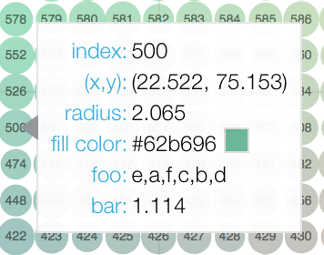

Configuring Plot Tools¶
Bokeh comes with a number of interactive tools that can be used to report information, to change plot parameters such as zoom level or range extents, or to add, edit, or delete glyphs. Tools can be grouped into four basic categories:
- Gestures
These are tools that respond to single gestures, such as a pan movement. The types of gesture tools are:
For each type of gesture, one tool can be active at any given time, and the active tool is indicated on the toolbar by a highlight next to to the tool icon.
- Actions
These are immediate or modal operations that are only activated when their button in the toolbar is pressed, such as the
ResetTool.- Inspectors
These are passive tools that report information or annotate plots in some way, such as the
HoverToolorCrosshairTool.- Edit Tools
These are sophisticated multi-gesture tools that can add, delete, or modify glyphs on a plot. Since they may respond to several gestures at once, an edit tool will potentially deactivate multiple single-gesture tools at once when it is activated.
In addition to information about all the individual tools, this chapter describes how the toolbar may be configured.
Positioning the Toolbar¶
By default, Bokeh plots come with a toolbar above the plot. In this section you will learn how to specify a different location for the toolbar, or to remove it entirely.
The toolbar location can be specified by passing the toolbar_location
parameter to the figure() function. Valid values are:
"above""below""left""right"
If you would like to hide the toolbar entirely, pass None.
Below is some code that positions the toolbar below the plot. Try
running the code and changing the toolbar_location value.
from bokeh.plotting import figure, output_file, show
output_file("toolbar.html")
# create a new plot with the toolbar below
p = figure(plot_width=400, plot_height=400,
title=None, toolbar_location="below")
p.circle([1, 2, 3, 4, 5], [2, 5, 8, 2, 7], size=10)
show(p)
Note that the toolbar position clashes with the default axes, in this case
setting the toolbar_sticky option to False will move the toolbar
to outside of the region where the axis is drawn.
from bokeh.plotting import figure, output_file, show
output_file("toolbar.html")
# create a new plot with the toolbar below
p = figure(plot_width=400, plot_height=400,
title=None, toolbar_location="below",
toolbar_sticky=False)
p.circle([1, 2, 3, 4, 5], [2, 5, 8, 2, 7], size=10)
show(p)
Specifying Tools¶
At the lowest bokeh.models level, tools are added to a Plot by
passing instances of Tool objects to the add_tools method:
plot = Plot()
plot.add_tools(LassoSelectTool())
plot.add_tools(WheelZoomTool())
This explicit way of adding tools works with any Bokeh Plot or
Plot subclass, such as Figure.
Tools can be specified by passing the tools parameter to the figure()
function. The tools parameter accepts a list of tool objects, for instance:
tools = [BoxZoomTool(), ResetTool()]
Tools can also be supplied conveniently with a comma-separate string containing tool shortcut names:
tools = "pan,wheel_zoom,box_zoom,reset"
However, this method does not allow setting properties of the tools.
Finally, it is also always possible to add new tools to a plot by passing
a tool object to the add_tools method of a plot. This can also be done
in conjunction with the tools keyword described above:
from bokeh.models import BoxSelectTool
plot = figure(tools="pan,wheel_zoom,box_zoom,reset")
plot.add_tools(BoxSelectTool(dimensions="width"))
Setting the Active Tools¶
Bokeh toolbars can have (at most) one active tool from each kind of gesture (drag, scroll, tap). By default, Bokeh will use a default pre-defined order of preference to choose one of each kind from the set of configured tools, to be active.
However it is possible to exert control over which tool is active. At the
lowest bokeh.models level, this is accomplished by using the active_drag,
active_inspect, active_scroll, and active_tap properties of
Toolbar. These properties can take the following values:
None— there is no active tool of this kind"auto"— Bokeh chooses a tool of this kind to be active (possibly none)a
Toolinstance — Bokeh sets the given tool to be the active tool
Additionally, the active_inspect tool may accept:
* A sequence of Tool instances to be set as the active tools
As an example:
# configure so that no drag tools are active
plot.toolbar.active_drag = None
# configure so that Bokeh chooses what (if any) scroll tool is active
plot.toolbar.active_scroll = "auto"
# configure so that a specific PolySelect tap tool is active
plot.toolbar.active_tap = poly_select
# configure so that a sequence of specific inspect tools are active
# note: this only works for inspect tools
plot.toolbar.active_inspect = [hover_tool, crosshair_tool]
The default value for all of these properties is "auto".
Active tools can be specified by passing the these properties as keyword
arguments to the figure() function. It is also possible to pass any one of
the string names for, ease of configuration:
# configures the lasso tool to be active
plot = figure(tools="pan,lasso_select,box_select", active_drag="lasso_select")
Pan/Drag Tools¶
These tools are employed by panning (on touch devices) or left-dragging (on mouse devices). Only one pan/drag tool may be active at a time. Where applicable, Pan/Drag tools will respect any max and min values set on ranges.
BoxSelectTool¶
name:
'box_select'icon:

The box selection tool allows the user to define a rectangular selection
region by left-dragging a mouse, or dragging a finger across the plot area.
The box select tool may be configured to select across only one dimension by
setting the dimensions property to width or height instead of the
default both.
Note
To make a multiple selection, press the SHIFT key. To clear the selection, press the ESC key.
BoxZoomTool¶
name:
'box_zoom'icon:

The box zoom tool allows the user to define a rectangular region to zoom the plot bounds too, by left-dragging a mouse, or dragging a finger across the plot area.
LassoSelectTool¶
name:
'lasso_select'icon:

The lasso selection tool allows the user to define an arbitrary region for selection by left-dragging a mouse, or dragging a finger across the plot area.
Note
To make a multiple selection, press the SHIFT key. To clear the selection, press the ESC key.
PanTool¶
name:
'pan','xpan','ypan',icon:

The pan tool allows the user to pan the plot by left-dragging a mouse or dragging a finger across the plot region.
It is also possible to constrain the pan tool to only act on either just the x-axis or
just the y-axis by setting the dimensions property to a list containing width
or height. Additionally, there are tool aliases 'xpan' and 'ypan',
respectively.
Click/Tap Tools¶
These tools are employed by tapping (on touch devices) or left-clicking (on mouse devices). Only one click/tap tool may be active at a time.
PolySelectTool¶
name:
'poly_select'icon:

The polygon selection tool allows the user to define an arbitrary polygonal region for selection by left-clicking a mouse, or tapping a finger at different locations.
Note
Complete the selection by making a double left-click or tapping. To make a multiple selection, press the SHIFT key. To clear the selection, press the ESC key.
TapTool¶
name:
'tap'icon:

The tap selection tool allows the user to select at single points by clicking a left mouse button, or tapping with a finger.
Note
To make a multiple selection, press the SHIFT key. To clear the selection, press the ESC key.
Scroll/Pinch Tools¶
These tools are employed by pinching (on touch devices) or scrolling (on mouse devices). Only one scroll/pinch tool may be active at a time.
WheelZoomTool¶
name:
'wheel_zoom','xwheel_zoom','ywheel_zoom'icon:

The wheel zoom tool will zoom the plot in and out, centered on the current mouse location. It will respect any min and max values and ranges preventing zooming in and out beyond these.
It is also possible to constraint the wheel zoom tool to only act on either
just the x-axis or just the y-axis by setting the dimensions property to
a list containing width or height. Additionally, there are tool aliases
'xwheel_zoom' and 'ywheel_zoom', respectively.
WheelPanTool¶
name:
'xwheel_pan','ywheel_pan'icon:

The wheel pan tool will translate the plot window along the specified dimension without changing the window’s aspect ratio. The tool will respect any min and max values and ranges preventing panning beyond these values.
Actions¶
Actions are operations that are activated only when their button in the toolbar is tapped or clicked. They are typically modal or immediate-acting.


ResetTool¶
name:
'reset'icon:

The reset tool will restore the plot ranges to their original values.
SaveTool¶
name:
'save'icon:

The save tool pops up a modal dialog that allows the user to save a PNG image of the plot.
ZoomInTool¶
{kind=link}
The zoom-in tool will increase the zoom of the plot. It will respect any min and max values and ranges preventing zooming in and out beyond these.
It is also possible to constraint the wheel zoom tool to only act on either
just the x-axis or just the y-axis by setting the dimensions property to
a list containing width or height. Additionally, there are tool aliases
'xzoom_in' and 'yzoom_in', respectively.
ZoomOutTool¶
name:
'zoom_out','xzoom_out','yzoom_out'icon:

The zoom-out tool will decrease the zoom level of the plot. It will respect any min and max values and ranges preventing zooming in and out beyond these.
It is also possible to constraint the wheel zoom tool to only act on either
just the x-axis or just the y-axis by setting the dimensions property to
a list containing width or height. Additionally, there are tool aliases
'xzoom_in' and 'yzoom_in', respectively.
Inspectors¶
Inspectors are passive tools that annotate or otherwise report information about the plot, based on the current cursor position. Any number of inspectors may be active at any given time. The inspectors menu in the toolbar allows users to toggle the active state of any inspector.
CrosshairTool¶
name:
'crosshair'menu icon:

Th crosshair tool draws a crosshair annotation over the plot, centered on
the current mouse position. The crosshair tool draw dimensions may be
configured by setting the dimensions property to one of the
enumerated values width, height, or both.
HoverTool¶
name:
'hover'menu icon:

The hover tool is a passive inspector tool. It is generally on at all times, but can be configured in the inspector’s menu associated with the toolbar.
Basic Tooltips¶
By default, the hover tool will generate a “tabular” tooltip where each row
contains a label, and its associated value. The labels and values are supplied
as a list of (label, value) tuples. For instance, the tooltip below on the
left was created with the accompanying tooltips definition on the right.
 |
hover.tooltips = [
("index", "$index"),
("(x,y)", "($x, $y)"),
("radius", "@radius"),
("fill color", "$color[hex, swatch]:fill_color"),
("foo", "@foo"),
("bar", "@bar"),
]
|
Field names that begin with $ are “special fields”. These often correspond
to values that are intrinsic to the plot, such as the coordinates of the mouse
in data or screen space. These special fields are listed here:
$indexindex of selected point in the data source
$namevalue of the
nameproperty of the hovered glyph renderer$xx-coordinate under the cursor in data space
$yy-coordinate under the cursor in data space
$sxx-coordinate under the cursor in screen (canvas) space
$syy-coordinate under the cursor in screen (canvas) space
$nameThe
nameproperty of the glyph that is hovered over$colorcolors from a data source, with the syntax:
$color[options]:field_name. The available options are:hex(to display the color as a hex value), andswatchto also display a small color swatch.
Field names that begin with @ are associated with columns in a
ColumnDataSource. For instance the field name "@price" will display
values from the "price" column whenever a hover is triggered. If the hover
is for the 17th glyph, then the hover tooltip will correspondingly display
the 17th price value.
Note that if a column name contains spaces, the it must be supplied by
surrounding it in curly braces, e.g. @{adjusted close} will display values
from a column named "adjusted close".
Sometimes (especially with stacked charts) it is desirable to allow the
name of the column be specified indirectly. The field name @$name is
distinguished in that it will look up the name field on the hovered
glyph renderer, and use that value as the column name. For instance, if
a user hovers with the name "US East", then @$name is equivalent to
@{US East}.
Here is a complete example of how to configure and use the hover tool by setting
the tooltips argument to figure:
from bokeh.plotting import figure, output_file, show, ColumnDataSource
output_file("toolbar.html")
source = ColumnDataSource(data=dict(
x=[1, 2, 3, 4, 5],
y=[2, 5, 8, 2, 7],
desc=['A', 'b', 'C', 'd', 'E'],
))
TOOLTIPS = [
("index", "$index"),
("(x,y)", "($x, $y)"),
("desc", "@desc"),
]
p = figure(plot_width=400, plot_height=400, tooltips=TOOLTIPS,
title="Mouse over the dots")
p.circle('x', 'y', size=20, source=source)
show(p)
Hit-testing Behavior¶
The hover tool displays informational tooltips associated with individual
glyphs. These tooltips can be configured to activate in in different ways
with a mode property:
"mouse"only when the mouse is directly over a glyph
"vline"whenever the a vertical line from the mouse position intersects a glyph
"hline"whenever the a horizontal line from the mouse position intersects a glyph
The default configuration is mode = "mouse". This can be observed in the
Basic Tooltips example above. The example below in
Formatting Tooltip Fields demonstrates an example that sets
mode = "vline".
Formatting Tooltip Fields¶
By default, values for fields (e.g. @foo) are displayed in a basic numeric
format. However it is possible to control the formatting of values more
precisely. Fields can be modified by appending a format specified to the end
in curly braces. Some examples are below.
"@foo{0,0.000}" # formats 10000.1234 as: 10,000.123
"@foo{(.00)}" # formats -10000.1234 as: (10000.123)
"@foo{($ 0.00 a)}" # formats 1230974 as: $ 1.23 m
The examples above all use the default formatting scheme. But there are other formatting schemes that can be specified for interpreting format strings:
"numeral"Provides a wide variety of formats for numbers, currency, bytes, times, and percentages. The full set of formats can be found in the
NumeralTickFormatterreference documentation."datetime"Provides formats for date and time values. The full set of formats is listed in the
DatetimeTickFormatterreference documentation."printf"Provides formats similar to C-style “printf” type specifiers. See the
PrintfTickFormatterreference documentation for complete details.
These are supplied by configuring the formatters property of a hover
tool. This property maps column names to format schemes. For example, to
use the "datetime" scheme for formatting a column "close date",
set the value:
hover_tool.formatters = { "close date": "datetime"}
If no formatter is specified for a column name, the default "numeral"
formatter is assumed.
Note that format specifications are also compatible with column names that
have spaces. For example `@{adjusted close}{($ 0.00 a)} applies a format
to a column named “adjusted close”.
The example code below shows explicitly configuring a HoverTool with
different formatters for different fields:
HoverTool(
tooltips=[
( 'date', '@date{%F}' ),
( 'close', '$@{adj close}{%0.2f}' ), # use @{ } for field names with spaces
( 'volume', '@volume{0.00 a}' ),
],
formatters={
'date' : 'datetime', # use 'datetime' formatter for 'date' field
'adj close' : 'printf', # use 'printf' formatter for 'adj close' field
# use default 'numeral' formatter for other fields
},
# display a tooltip whenever the cursor is vertically in line with a glyph
mode='vline'
)
You can see the output generated by this configuration by hovering the mouse over the plot below:
Using the CustomJSHover model, it is also possible to use JavaScript
to specify a custom formatter that can display derived quantities in the
tooltip.
Image Hover¶
The hover tool can be used to inspect image glyphs which may contain
layers of data in the corresponding ColumnDataSource:
import numpy as np
from bokeh.plotting import figure, output_file, show
output_file("tools_hover_tooltip_image.html")
ramp = np.array([np.linspace(0, 10, 200)]*20)
steps = np.array([np.linspace(0, 10, 10)]*20)
bitmask = np.random.rand(25, 10) > 0.5
data = dict(image=[ramp, steps, bitmask],
squared=[ramp**2, steps**2, bitmask**2],
pattern=['smooth ramp', 'steps', 'bitmask'],
x=[0, 0, 25],
y=[5, 20, 5],
dw=[20, 20, 10],
dh=[10, 10, 25])
TOOLTIPS = [
('index', "$index"),
('pattern', '@pattern'),
("x", "$x"),
("y", "$y"),
("value", "@image"),
('squared', '@squared')
]
p = figure( x_range=(0, 35), y_range=(0, 35), tools='hover,wheel_zoom', tooltips=TOOLTIPS)
p.image(source=data, image='image', x='x', y='y', dw='dw', dh='dh', palette="Inferno256")
show(p)
In this example, three image patterns are defined named ramp,
steps and bitmask. The hover tooltip shows the index of the
image, the name of the pattern, the x and y position of the
cursor as well as the corresponding value and value squared.
Custom Tooltip¶
It is also possible to supply a custom HTML template for a tooltip. To do
this, pass an HTML string, with the Bokeh tooltip field name symbols wherever
substitutions are desired. All of the information above regarding formats, etc.
still applies. Note that you can also use the {safe} format after the
column name to disable the escaping of HTML in the data source. An example is
shown below:
from bokeh.plotting import figure, output_file, show, ColumnDataSource
output_file("toolbar.html")
source = ColumnDataSource(data=dict(
x=[1, 2, 3, 4, 5],
y=[2, 5, 8, 2, 7],
desc=['A', 'b', 'C', 'd', 'E'],
imgs=[
'https://bokeh.pydata.org/static/snake.jpg',
'https://bokeh.pydata.org/static/snake2.png',
'https://bokeh.pydata.org/static/snake3D.png',
'https://bokeh.pydata.org/static/snake4_TheRevenge.png',
'https://bokeh.pydata.org/static/snakebite.jpg'
],
fonts=[
'<i>italics</i>',
'<pre>pre</pre>',
'<b>bold</b>',
'<small>small</small>',
'<del>del</del>'
]
))
TOOLTIPS = """
<div>
<div>
<img
src="@imgs" height="42" alt="@imgs" width="42"
style="float: left; margin: 0px 15px 15px 0px;"
border="2"
></img>
</div>
<div>
<span style="font-size: 17px; font-weight: bold;">@desc</span>
<span style="font-size: 15px; color: #966;">[$index]</span>
</div>
<div>
<span>@fonts{safe}</span>
</div>
<div>
<span style="font-size: 15px;">Location</span>
<span style="font-size: 10px; color: #696;">($x, $y)</span>
</div>
</div>
"""
p = figure(plot_width=400, plot_height=400, tooltips=TOOLTIPS,
title="Mouse over the dots")
p.circle('x', 'y', size=20, source=source)
show(p)
Edit Tools¶
The edit tools provide functionality for drawing and editing glyphs
client-side by adding, modifying and deleting ColumnDataSource
data.
All the edit tools share a small number of key bindings:
- SHIFT
Modifier key to add to selection or start drawing
- BACKSPACE
Deletes the selected glyphs
- ESC
Clear the selection
Note
On MacBooks and some other keyboards the BACKSPACE key is labelled “delete”.
BoxEditTool¶
{kind=link}
The BoxEditTool allows drawing, dragging and deleting Rect glyphs
on one or more renderers by editing the underlying
ColumnDataSource data. Like other drawing tools, the renderers
that are to be edited must be supplied explicitly as a list:
r1 = p.rect('x', 'y', 'width', 'height', source=source)
r2 = p.rect('x', 'y', 'width', 'height', source=source2)
tool = BoxEditTool(renderers=[r1, r2])
The tool will automatically modify the columns on the data source
corresponding to the x, y, width and height values of
the glyph. Any additional columns in the data source will be padded
with the declared empty_value, when adding a new box. When drawing
a new box the data will always be added to the ColumnDataSource on
the first supplied renderer.
It is also often useful to limit the number of elements that can be
drawn, e.g. when specifying a specific number of regions of interest.
Using the num_objects property we can ensure that once the limit
has been reached the oldest box will be popped off the queue to make
space for the new box being added.

The animation above shows the supported tool actions, highlighting
mouse actions with a circle around the cursor and key strokes by
showing the pressed keys. The BoxEditTool can Add, Move
and Delete boxes on plots:
- Add box
Hold shift then click and drag anywhere on the plot or double tap once to start drawing, move the mouse and double tap again to finish drawing.
- Move box
Click and drag an existing box, the box will be dropped once you let go of the mouse button.
- Delete box
Tap a box to select it then press BACKSPACE key while the mouse is within the plot area.
To Move or Delete multiple boxes at once:
- Move selection
Select box(es) with SHIFT+tap (or another selection tool) then drag anywhere on the plot. Selecting and then dragging on a specific box will move both.
- Delete selection
Select box(es) with SHIFT+tap (or another selection tool) then press BACKSPACE while the mouse is within the plot area.
FreehandDrawTool¶
{kind=link}
The FreehandDrawTool allows freehand drawing of lines and polygons
using the Patches and MultiLine glyphs, by editing the
underlying ColumnDataSource data. Like other drawing tools, the
renderers that are to be edited must be supplied explicitly as a
list:
r = p.multi_line('xs', 'ys' source=source)
tool = FreehandDrawTool(renderers=[r])
The tool will automatically modify the columns on the data source
corresponding to the xs and ys values of the glyph. Any
additional columns in the data source will be padded with the declared
empty_value, when adding a new point. Any newly added patch or
multi-line will be inserted on the ColumnDataSource of the first
supplied renderer.
It is also often useful to limit the number of elements that can be
drawn, e.g. when specifying a specific number of regions of interest.
Using the num_objects property we can ensure that once the limit
has been reached the oldest patch/multi-line will be popped off the
queue to make space for the new patch/multi-line being added.

The animation above shows the supported tool actions, highlighting
mouse actions with a circle around the cursor and key strokes by
showing the pressed keys. The PolyDrawTool can Draw and
Delete patches and multi-lines:
- Draw patch/multi-line
Click and drag to start drawing and release the mouse button to finish drawing
- Delete patch/multi-line
Tap a line or patch to select it then press BACKSPACE key while the mouse is within the plot area.
To Delete multiple patches/lines at once:
- Delete selection
Select patches/lines with SHIFT+tap (or another selection tool) then press BACKSPACE while the mouse is within the plot area.
PointDrawTool¶
{kind=link}
The PointDrawTool allows adding, dragging and deleting point-like
glyphs (of XYGlyph type) on one or more renderers by editing the
underlying ColumnDataSource data. Like other drawing tools, the
renderers that are to be edited must be supplied explicitly as a
list:
c1 = p.circle('x', 'y', 'width', 'height', source=source)
r1 = p.rect('x', 'y', 0.1, 0.1, source=source2)
tool = PointDrawTool(renderers=[c1, r1])
The tool will automatically modify the columns on the data source
corresponding to the x and y values of the glyph. Any
additional columns in the data source will be padded with the declared
empty_value, when adding a new point. Any newly added points will
be inserted on the ColumnDataSource of the first supplied
renderer.
It is also often useful to limit the number of elements that can be
drawn. Using the num_objects property we can ensure that once the
limit has been reached the oldest point will be popped off the queue
to make space for the new point being added.

The animation above shows the supported tool actions, highlighting mouse actions with a circle around the cursor and key strokes by showing the pressed keys. The PointDrawTool can Add, Move and Delete point-like glyphs on plots:
- Add point
Tap anywhere on the plot
- Move point
Tap and drag an existing point, the point will be dropped once you let go of the mouse button.
- Delete point
Tap a point to select it then press BACKSPACE key while the mouse is within the plot area.
To Move or Delete multiple points at once:
- Move selection
Select point(s) with SHIFT+tap (or another selection tool) then drag anywhere on the plot. Selecting and then dragging a specific point will move both.
- Delete selection
Select point(s) with SHIFT+tap (or another selection tool) then press BACKSPACE while the mouse is within the plot area.
PolyDrawTool¶
name:
'poly_draw'menu icon:

The PolyDrawTool allows drawing, selecting and deleting
Patches and MultiLine glyphs on one or more renderers by
editing the underlying ColumnDataSource data. Like other drawing
tools, the renderers that are to be edited must be supplied explicitly
as a list.
The tool will automatically modify the columns on the data source
corresponding to the xs and ys values of the glyph. Any
additional columns in the data source will be padded with the declared
empty_value, when adding a new point. Any newly added patch or
multi-line will be inserted on the ColumnDataSource of the first
supplied renderer.
It is also often useful to limit the number of elements that can be
drawn, e.g. when specifying a specific number of regions of interest.
Using the num_objects property we can ensure that once the limit
has been reached the oldest patch/multi-line will be popped off the
queue to make space for the new patch/multi-line being added.
If a vertex_renderer with an point-like glyph is supplied the
PolyDrawTool will use it to display the vertices of the
multi-lines/patches on all supplied renderers. This also enables the
ability to snap to existing vertices while drawing.

The animation above shows the supported tool actions, highlighting
mouse actions with a circle around the cursor and key strokes by
showing the pressed keys. The PolyDrawTool can Add, Move
and Delete patches and multi-lines:
- Add patch/multi-line
Double tap to add the first vertex, then use tap to add each subsequent vertex, to finalize the draw action double tap to insert the final vertex or press the ESC key.
- Move patch/multi-line
Tap and drag an existing patch/multi-line, the point will be dropped once you let go of the mouse button.
- Delete patch/multi-line
Tap a patch/multi-line to select it then press BACKSPACE key while the mouse is within the plot area.
PolyEditTool¶
{kind=link}
The PolyEditTool allows editing the vertices of one or more
Patches or MultiLine glyphs. The glyphs to be edited can
be defined via the renderers property and the renderer for the
vertices can be defined via the vertex_renderer, which must
render a point-like Glyph (of XYGlyph type).
The tool will automatically modify the columns on the data source
corresponding to the xs and ys values of the glyph. Any
additional columns in the data source will be padded with the declared
empty_value, when adding a new point.

The animation above shows the supported tool actions, highlighting
mouse actions with a circle around the cursor and key strokes by
showing the pressed keys. The PolyEditTool can Add, Move
and Delete vertices on existing patches and multi-lines:
- Show vertices
Double tap an existing patch or multi-line
- Add vertex
Double tap an existing vertex to select it, the tool will draw the next point, to add it tap in a new location. To finish editing and add a point double tap otherwise press the ESC key to cancel.
- Move vertex
Drag an existing vertex and let go of the mouse button to release it.
- Delete vertex
After selecting one or more vertices press BACKSPACE while the mouse cursor is within the plot area.
Controlling Level of Detail¶
Although the HTML canvas can comfortably display tens or even hundreds of thousands of glyphs, doing so can have adverse affects on interactive performance. In order to accommodate large-ish (but not enormous) data sizes, Bokeh plots offer “Level of Detail” (LOD) capability in the client.
Note
Another option, when dealing with very large data volumes, is to use the Bokeh Server to perform downsampling on data before it is sent to the browser. Such an approach is unavoidable past a certain data size. See Running a Bokeh Server for more information.
The basic idea is that during interactive operations (e.g., panning or
zooming), the plot only draws some small fraction of data points. This
hopefully allows the general sense of the interaction to be preserved
mid-flight, while maintaining interactive performance. There are four
properties on Plot objects that control LOD behavior:
-
lod_interval¶ property type:
IntInterval (in ms) during which an interactive tool event will enable level-of-detail downsampling.